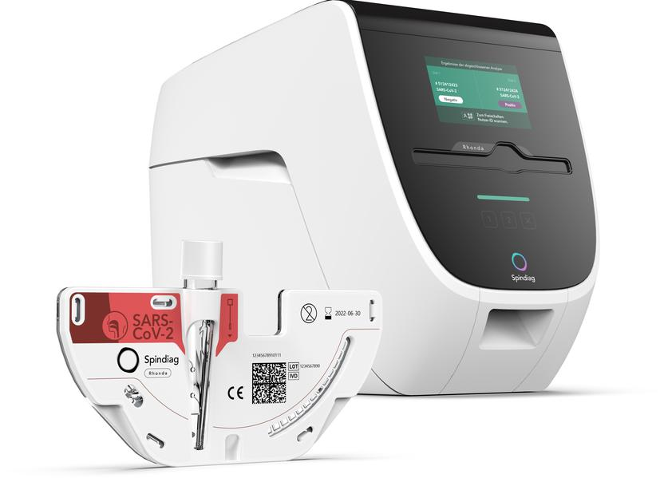
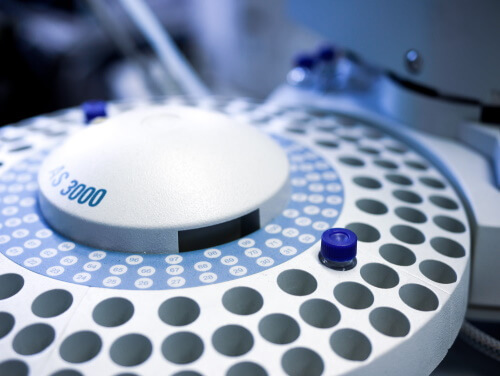
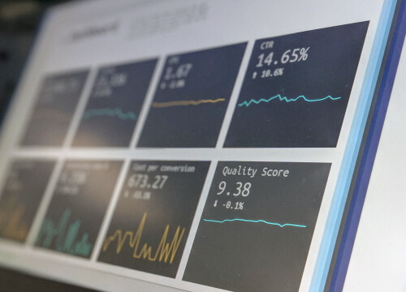

Handsome
Collect the results of different brands of microlabs sending their measurements to the main system.
The program checks the results after verifying the status of the microlab. All results are stored in a central storage system.
The logged in user is the user of the microlab. It is crucial to check the results, the status of the results to receive the approval back.

X-tracked
Various suppliers of blood measurements, such as laboratory, micro-analysis systems, send their results to this system to store them in the main system.
Summary and checksums confirm that the results have been successfully received and saved.

Debriever
All results are analyzed and assessed. Add advice and warnings to the results.
Result portal
A website that gives you the results of stored blood values, depending on the purpose.
New results are featured since the last visit.
The result can be exported in various formats to suit client care systems.
Z-Analyse
This system analyzes the history of the data to create a logical timeline by displaying the fluctuations.
This can be on one or more records to produce information for imaging of medical personnel, sales, methods used, etc.
Log service
Single logging service for logging all messages on any application to keep more than 5 years of data.
Personal data is not allowed, only reference codes.
Every x (configurable number of) days the rules are archived to a separate big data service.
It keeps the service up to speed with only the most necessary data.
Service desk gets access to the data per user.
Systems Analyst reports on multiple concurrent issues and can view all log data.
Architecture
The application runs on separate hosted servers in different places on the internet.
This bullet list is an overview of the decisions made within the project.
- By creating a read service to read from the storage, and a separate write service to write to the storage, we spread the network load as much as possible.
- Primarily connected to a security service, all communication is secured by default (such as SSL and standard security protocols) and whitelisting, as well as custom secured with unique codes that are only known to the sender and receiver
- An OAuth2 user security covers the front-end security. While this security at the back communicates with a unique key pair every time, it protects hacking from within to other caregivers.
- By keeping all plugins and technologies used at a basic level, it prevents problems after upgrading. Therefore, any extensions are built outside of the default modules, and the log tells their problem for troubleshooting.
- Modular/microservice usage prevents complex codestrokes in a large app. Takes less effort for maintenance. Can easily switch to external or internal services.
- All applications are written in .net 6 or newer, and will be upgraded to any new LTS version.
- The services are redundantly distributed over multiple overload hosts with an uptime of more than 99%. The risk of failure is kept to the absolute minimum.
- We create a central log service with tenants and tags for the use of the servicedesk. This service must use the default .net log routine.